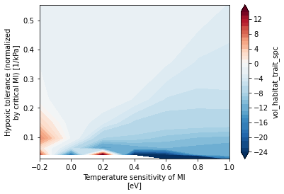

Mapping aerobic habitat in trait space
Mapping aerobic habitat in trait space#
%load_ext autoreload
%autoreload 2
import cartopy
import cartopy.crs as ccrs
import cmocean
import data_collections as dc
import funnel
import intake
import matplotlib.pyplot as plt
import numpy as np
import util
import xarray as xr
from matplotlib import colors
sub_spec = dict(
name='drift-corrected',
experiment=['20C', 'RCP85'],
member_id=dc.ocean_bgc_member_ids,
)
catalog = funnel.to_intake_esm(agg_member_id=True).search(**sub_spec)
catalog
glade-cesm1-le catalog with 2 dataset(s) from 464 asset(s):
| unique | |
|---|---|
| experiment | 2 |
| component | 1 |
| stream | 1 |
| member_id | 32 |
| variable | 8 |
| name | 1 |
| path | 464 |
cat = catalog.search(variable='vol_habitat_trait_spc')
cat.df.head()
| experiment | component | stream | member_id | variable | name | path | |
|---|---|---|---|---|---|---|---|
| 0 | 20C | ocn | pop.h | 9 | vol_habitat_trait_spc | drift-corrected | /glade/scratch/mclong/ocean-metabolism/funnel-... |
| 1 | 20C | ocn | pop.h | 10 | vol_habitat_trait_spc | drift-corrected | /glade/scratch/mclong/ocean-metabolism/funnel-... |
| 2 | 20C | ocn | pop.h | 11 | vol_habitat_trait_spc | drift-corrected | /glade/scratch/mclong/ocean-metabolism/funnel-... |
| 3 | 20C | ocn | pop.h | 12 | vol_habitat_trait_spc | drift-corrected | /glade/scratch/mclong/ocean-metabolism/funnel-... |
| 4 | 20C | ocn | pop.h | 13 | vol_habitat_trait_spc | drift-corrected | /glade/scratch/mclong/ocean-metabolism/funnel-... |
try:
cluster
client
except:
cluster, client = util.get_ClusterClient(memory='8GB')
cluster.scale(6)
client
/glade/work/mclong/miniconda3/envs/metabolic/lib/python3.7/site-packages/distributed/node.py:182: UserWarning: Port 8787 is already in use.
Perhaps you already have a cluster running?
Hosting the HTTP server on port 45847 instead
f"Port {expected} is already in use.\n"
Client
Client-5ae1b058-8a87-11ec-8933-ac1f6bab1e66
| Connection method: Cluster object | Cluster type: dask_jobqueue.PBSCluster |
| Dashboard: https://jupyterhub.hpc.ucar.edu/stable/user/mclong/calcs/proxy/45847/status |
Cluster Info
PBSCluster
5879b6a5
| Dashboard: https://jupyterhub.hpc.ucar.edu/stable/user/mclong/calcs/proxy/45847/status | Workers: 0 |
| Total threads: 0 | Total memory: 0 B |
Scheduler Info
Scheduler
Scheduler-d8a7ec4a-e421-47d1-97a1-fbb2c6c16211
| Comm: tcp://10.12.205.22:43894 | Workers: 0 |
| Dashboard: https://jupyterhub.hpc.ucar.edu/stable/user/mclong/calcs/proxy/45847/status | Total threads: 0 |
| Started: Just now | Total memory: 0 B |
Workers
cat = catalog.search(variable='vol_habitat_trait_spc')
dsets = cat.to_dataset_dict(zarr_kwargs={'use_cftime': True})
keys = list(dsets.keys())
exp_keys = ['20C.ocn.pop.h.drift-corrected', 'RCP85.ocn.pop.h.drift-corrected']
ds = xr.concat([dsets[k] for k in exp_keys], dim='time', coords='minimal').compute()
ds.vol_habitat_trait_spc.data *= 1e-6 * 1e-6 # convert from cm^3 to 10^6 m^6
ds.vol_habitat_trait_spc.attrs['units'] = '10$^6$ m$^3$'
ds.vol_habitat_trait_spc.attrs['long_name'] = 'Aerobic habitat volume'
ds
--> The keys in the returned dictionary of datasets are constructed as follows:
'experiment.component.stream.name'
100.00% [2/2 00:00<00:00]
<xarray.Dataset>
Dimensions: (Ac: 8, Eo: 7, time: 2172, member_id: 31)
Coordinates:
* Ac (Ac) float64 0.0258 0.0399 0.0619 ... 0.3568 0.5528
* Eo (Eo) float64 -0.2 -0.0 0.2 0.4 0.6 0.8 1.0
* time (time) object 1920-01-17 00:29:59.999993 ... 2100-...
* member_id (member_id) int64 9 10 11 12 13 ... 102 103 104 105
Data variables:
vol_habitat_trait_spc (member_id, Ac, Eo, time) float64 0.0 0.0 ... 3.1e+11
Attributes:
intake_esm_varname: ['vol_habitat_trait_spc']
intake_esm_dataset_key: 20C.ocn.pop.h.drift-correctedyrfrac = util.year_frac(ds.time)
tndx_ref = np.where(yrfrac < 1966)[0]
tndx_2100 = np.where(yrfrac > 2080)[0]
with xr.set_options(keep_attrs=True):
vol_hab_ref = ds.vol_habitat_trait_spc.isel(time=tndx_ref).mean(['member_id', 'time'])
vol_hab_ref_std = ds.vol_habitat_trait_spc.isel(time=tndx_ref).std(['member_id', 'time'])
vol_hab_2100 = ds.vol_habitat_trait_spc.isel(time=tndx_2100).mean(['member_id', 'time'])
vol_hab_2100_std = ds.vol_habitat_trait_spc.isel(time=tndx_2100).std(['member_id', 'time'])
# vol_hab_ref_percent = 100.0 * vol_hab_ref / total_volume
# vol_hab_ref_percent.attrs['long_name'] = 'Ocean volume'
# vol_hab_ref_percent.attrs['units'] = '%'
vol_hab_2100
<xarray.DataArray 'vol_habitat_trait_spc' (Ac: 8, Eo: 7)>
array([[0.00000000e+00, 0.00000000e+00, 1.29009094e+02, 3.86917284e+05,
2.92439472e+08, 2.77695417e+10, 9.06503626e+10],
[3.03807576e+07, 4.76209096e+06, 3.94531066e+07, 1.09296157e+10,
7.98274666e+10, 1.19127362e+11, 1.35613258e+11],
[4.66720737e+10, 4.05575317e+10, 6.15290308e+10, 1.35956198e+11,
1.52920393e+11, 1.62840187e+11, 1.71874601e+11],
[1.15763134e+11, 1.49111446e+11, 1.88751811e+11, 1.94174354e+11,
1.97607585e+11, 2.03028907e+11, 2.12035733e+11],
[1.82005398e+11, 2.26200202e+11, 2.34706400e+11, 2.35361204e+11,
2.38522066e+11, 2.44661301e+11, 2.50504453e+11],
[2.40834337e+11, 2.50746434e+11, 2.60397414e+11, 2.68918378e+11,
2.72353595e+11, 2.75510129e+11, 2.78612988e+11],
[2.62072179e+11, 2.72083275e+11, 2.82056183e+11, 2.90804551e+11,
2.96441110e+11, 2.97356687e+11, 2.97203770e+11],
[2.82229083e+11, 2.90852622e+11, 2.98680095e+11, 3.05726062e+11,
3.10539757e+11, 3.13125936e+11, 3.11899039e+11]])
Coordinates:
* Ac (Ac) float64 0.0258 0.0399 0.0619 0.0959 ... 0.2303 0.3568 0.5528
* Eo (Eo) float64 -0.2 -0.0 0.2 0.4 0.6 0.8 1.0
Attributes:
units: 10$^6$ m$^3$
long_name: Aerobic habitat volumevol_hab_ref.plot.contourf(levels=30)
<matplotlib.contour.QuadContourSet at 0x2afe543e17d0>
vol_hab_2100.plot()
<matplotlib.collections.QuadMesh at 0x2afe5473c6d0>
(vol_hab_2100 - vol_hab_ref).plot.contourf(levels=30)
<matplotlib.contour.QuadContourSet at 0x2afe5482d410>
change_percent = 100.0 * (vol_hab_2100 - vol_hab_ref) / vol_hab_ref.where(vol_hab_ref > 1e5)
mx = np.floor(change_percent.max())
mn = -24.0
divnorm = colors.TwoSlopeNorm(vmin=mn, vcenter=0, vmax=mx)
dx = 1.0
change_percent.plot.contourf(norm=divnorm, levels=np.arange(mn, mx + dx, dx), extend='both');

change_percent = 100.0 * (vol_hab_2100 - vol_hab_ref) / vol_hab_ref.where(vol_hab_ref > 1e5)
mx = np.floor(change_percent.max())
mn = -24.0
dx = 1.0
cf = plt.contourf(
change_percent.Eo,
1.0 / change_percent.Ac,
change_percent,
levels=np.arange(mn, mx + dx, dx),
norm=colors.TwoSlopeNorm(vmin=mn, vcenter=0, vmax=mx),
extend='both',
cmap=cmocean.cm.curl_r,
)
plt.ylim(0, 25)
plt.colorbar(cf)
<matplotlib.colorbar.Colorbar at 0x2afe793afa10>